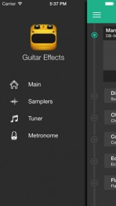
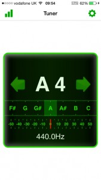
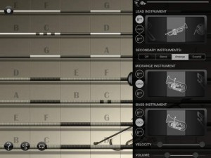
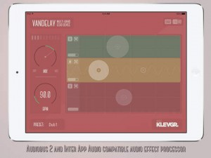
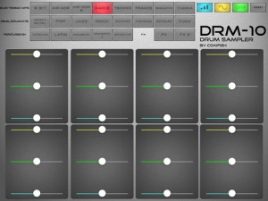
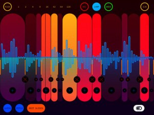
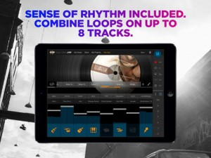
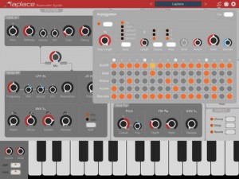

[appext 929809673]Guitar Effects transforms your iPhone or iPod touch into a powerful guitar amp & effects studio! Just attach your electric guitar using an interface or a headphones. Guitar Effects is a new effect guitar app and guitar interface for iPhone and iPod Touch.
Guitar Effects app works with the Flanger Plug and most other iOS guitar adaptors. The Flanger Plug is an ultra-portable guitar interface for iOS device, with the Flanger Plug, you can connect your guitar with iPad, iPhone or iPod Touch, and enjoy all the jamming features with your headphone, audio interface or PA system.
Guitar Effects is a digital guitar effect unit for your acoustic and electric guitar.The concept is simple: While you play your guitar, the microphone of the headset of your iPhone or iPod Touch picks up the sound of your guitar. Guitar Effects applies the distortion effect in real time to the input signal and outputs the result directly over the earphones. As a consequence, your acoustic guitar will sound to you just like an electric guitar that is plugged into an amplifier with a distortion effect unit.
Also, you can play your songs with a great collection of battery and bass samplers.
What you get:
– 5 Effects: Distortion, Chorus, Compressor, Echo and Flanger
– the intensity of the effect can be adjusted continuously
– super low latency between 12 and 23 milliseconds
– high quality audio output at 44.1 KHz
– a great collection of battery and bass samplers
– a Tuner
– and a MetronomeREQUIREMENTS:
– iPhone with any kind of earphones
– iPod Touch 2nd generation with a headset that has an integrated MICROPHONE
The headset’s microphone is essential, because the iPod itself does not have a microphone. We recommend the Apple Stereo Headset with integrated microphone. This headset is not the one shipped with the iPod, it has to be bought additionally.
– iPod Touch 1st generation is NOT supported.
– ready for iPhone 5, 6 and 6 Plus.
– iOS 7 and 8 compatible.
Guitar Effects
MiMiX inbound
Are you using Audiobus 2 on a regular basis? bet you wish you could properly mix all iPad music apps the traditional way. Well wish not longer MiMix is the answer.
With MiMiX You can take total control of mixing of Your favourite Audiobus enabled apps’ outputs in the most convenient way. Just insert MiMiX into the Output Slot of Audiobus, even into multiple chains to mix the sound of the connected input or effect apps. You can even insert MiMIX into the input slot to send the mix to an other app, like a DAV to record the mix.
Features:
– Mix up to 8 Audiobus enabled apps including the system input or multiple channels of a multi-channel input hardware
– Set the main mix volume level between -INF and +12dB
– Set the volume level of each input port between -INF and +12dB
– Set the panning or balance of each port (selectable)
– Mute any port
– Set any port to solo
– Monitor any port or the main mix on the built-in oscilloscopes and VU meters
– Control the main mix volume and volume, balance, mute and solo for each port using a MIDI controller or a Core MIDI app
– Set the MIDI CC parameters of each control via MIDI learn
– Set the MIDI channel and button behaviour in the System Settings
– Double-tap on each knob or slider to set its default value
– Check the saturation indicator for each port to check if the pots power reached 0dB
– Check the clip indicator on the main mix to avoid clipping.
– MiMiX uses a 32 bit integer engine so clipping can only occur at the main mixFor more details on MiMix check the official website – http://ttrgames.hu/mimix/

In-Tune Instrument Tuner
Does the App Store really need another guitar tuner? Really? Well in case you couldn’t find one in your favourite colour, here’s a new one from the makers of Meteor, Stompbox, and Synergy Studio.
[appext 929029782]In-Tune is a high precision real-time guitar tuner for your iPhone. The tuner can accurately determine the frequency, musical note and octave for each of your guitar strings. The ability to estimate note and octave makes this a very useful tool to aid musical notation.
The program has two modes of operation, one for determine pitches using harmonic content which is ideally suited for those instruments whose waveforms are complex and rich in harmonics and another for pure tones, best suited for audio engineers.
The program has a simple uncluttered interface with 4 different color sets and a night mode so you can customise to your liking.
We also display a waveform analysis graph allowing you to see a visual representation of the harmonic content.
Features
A440 Calibration (+/- 15Hz)
Pure Tone or Harmonic Content Modes
Fine Tuning Display +/- 50 Cents
Definable Trigger Level
4 Different Colour Sets
Night and Day Modes
Uses 16K FFT for greater precision.
iFretless Brass
[appext 915761815]iFretless Brass enables guitar and string instrument players to play expressive music with a variety of instruments. It includes a detailed library of samples from real brass instruments as well as a collection of classic synth sounds. Each note is sampled at nine different volume levels in order to capture the full range of tones produced by the original instrument.
Key features:
1) Supports MIDI input and output for interface with external devices such as digital pianos and electronic wind instruments as well as virtual MIDI compatible iOS apps.
2) A patented algorithm uses the accelerometer accurately detects touch pressure on the screen and respond with dynamic selection of samples of the appropriate timbre and volume.
3) Responds to fretless vibrato and between-note slides in a natural way, making it one of the most expressive performance interfaces available anywhere.
4) Connects to other iOS music apps via IAA and AudioBusSound library includes:
Euphonium
Trombone
Trumpet
Tuba
French Horn
Muted Trumpet
and a collection of classic synth samples*Requires iPad 2, iPad Mini original, iPhone4s, iPod Touch 5, or newer devices.
iPads with retina displays are recommended for best results.
Vandelay multiband echo
Vandelay provides three separate delays in as many frequency regions. Each delay has an LFO that modulates the pitch of the audio stream. Together with tempo based delay times and feedback control you can create a very rich sound from almost any source. Sporting a clever, responsive and intuitive user interface, Vandelay is easily controlled and you will almost certainly get the hang out of it in minutes.
The app comes with 20 presets for inspiration.
Features:
• Full Audiobus 2 compatibility including state saving.
• Inter App Audio (IAA) compatible.
• Unique pitch modulation.
• Delay times are tempo based and can be quantized using the snap function.
• All parameters are visible and editable in one screen, wrapped in an intuitive user interface.
• Load / Save presets
[app 918115652]
Introducing Wej
The creative team behind the music apps, iProphet, iMini, and the killer beat maker, iMPC Pro, Retronyms, has been busy at work a unique piece of hardware designed for making life easier when playing and performing music on your iPad. It’s simply called, Wej
Utilising Apple’s new Bluetooth LE MIDI functionality, you’ll be able to plug in any USB MIDI controller into the Wej, and supported music apps can be played wirelessly.
Wej has even been designed to place your iPad on, thanks to its angled, silcon based surface which is non slip. Best of all, Wej can power all connected USB devices and even recharge an iOS device when connected via USB.
Not sure I’m won on the built in light show that Wej also features, but each to their own I guess. (I’m sure it can be turned off!)
There’s a couple of week’s still left to pre order a Wej, so if you’re interested head to this site – http://preorder.retronyms.com/
Here’s a video on Wej:
Drum Sampler
[appext 921425704]Amazing yet simple drum sampler, extremely easy to use, pristine audio quality, and a lot more goodies including:
*Pitch adjust for each pad.
*Volume adjust for each pad.
*Pan adjust for each pad.
*8 Electronic kits covering a wide range of music styles.
*8 Real drum kits, from jazz to heavy metal and from vintage to pop.
*5 Percussion kits that seems like a world tour.
*2 FX kits.
*more than 180 sound files (and growing), in raw format, no quality compression added, crystal clear samples meant for the most demanding artists.
*minimalist interface that lets you focus on your music.Crafted for enthusiasts and professionals, anyone will find a starting point and whenever you need it you can add more complexity.
STROM
[appext 907044543]STROM is an incredibly fun sampler.
Record up to 10 seconds of audio, slice and sequence it, resample, create something entirely new!
The super responsive interface lets you sequence your source material in unique ways. You can always resample what you play, allowing you to quickly lift your audio into glitch heaven. You can edit slices while you are playing them – this lets you come up with really interesting grooves.
STROM’s sampler integrates nicely with other apps:
Copy audio from any app, using AudioShare and AudioCopy/Paste. Mangle them with STROM’s slice engine. Share your sliced samples with your friends! Copy them back to any other app for further processing.STROM’s full power is unleashed if you connect your Elektron Analog Rytm drum computer to your iPad (and buy the Rytm In-App Purchase Upgrade):
For one, you can easily transfer samples to your Rytm using MIDI Sample Dump Standard. STROM can also send all slices as separate files. For example, load a vocal phrase, quickly slice it up, and send the individual “ooohs” and “aaahs” as one-shots. Slices are automatically numbered.
But the real juice is in STROM’s Rytm performance interface:
Designed to excel in the studio as well as on stage, STROM extends and augments your Analog Rytm.
Using the CTL-AL function, inspired by the legendary Machinedrum, you can tweak sounds on multiple tracks at once. For example, sweep the filter on all (or some) tracks. Or change the sample slot for all tracks (or less crazy, limit it to a few tracks of your choice). All sound and trig parameters, as well as track levels, are available to be tweaked with CTL-AL.
CTL-AL has UNDO, so you can instantly return to your previous drum kit settings.
You can also use CTL-AL to create parameter lock automation in your current pattern!Intelligent Kit Randomizer:
It lets you squeeze the wildest sounds out of the Rytm. The Randomizer gives you detailed control over which tracks and parameters should be affected, and by how much. It isn’t really “random”, but uses your current Kit as the basis. You have intuitive and detailed control over whether to just shift the sound a little, or mangle everything completely insanely.Then there’s the Pattern Generator:
It’s main deal is an intuitive interface for quickly creating rhythmic patterns.
Rhythms are programmed into the Rytm’s sequencer instantly.
Leveraging the musical Euclidean algorithm, it generates cyclic patterns that are not random, but follow a logic which is perceived by most humans as actual groove. You have quick and detailed control over what exactly it should generate.
For example, it couldn’t be easier to pop up an interesting closed/open hihat groove.
Or a kick / snare / tom-tom workout. Or a hand-clap break, just at the end of your loop.In addition, there are special shift rotation tools which are super effective for creating syncopations and breaks.
There is no quicker, better and insaner way for live beat generation than the Rytm combined with STROM’s Pattern Generator, period.
Finally, the Kit and Pattern Pasteboard:
This gives you multiple copy & paste slots for Kits and Patterns. You can quickly capture the current rhythm or sound inside one of STROM’s four pasteboard slots, tweak everything wildly, and instantly pop the original data back to your drum machine. Incredibly powerful for playing out live.With STROM, your Analog Rytm becomes supercharged.
(Rytm Upgrade is an In-App-Purchase. Elektron Analog Rytm is a hardware instrument which must be purchased separately. USB-Lightning Camera adapter is required for the MIDI connection)
MusicMakerJam
[app 880929886]Create your own tracks with Music Maker Jam! Whether Hip Hop, Dubstep, Rock or Drum & Bass – a complete range of over 70 music styles and an 8-channel mixer give your creativity plenty of room to express itself.
Music Maker Jam is simple and easy-to-use, allowing you to achieve professional results in no time at all. No previous experience? You don’t need any!Choose from thousands of professional loops and bring your musical ideas to life. Change the tempo or play around with spectacular sound effects in real time. Music Maker Jam offers intuitive controls and amazing results. All your tracks stay perfectly in rhythm as you put your tracks together, and the Harmony Editor and Arranger provide even more possibilities for customizing your music. The 8-channel mixer lets you give your mix the right balance.
Define new genres by combining different style packs into a sound of your own. You can share your finished tracks and jam sessions with friends at any time – CONNECT WITH MUSIC™FEATURES
– Free download with four music styles
– Choose from over 70 styles such as Hip Hop, Dubstep, Rock, Funk, Trap, Drum & Bass, Techno, House, Ambient, Jazz, and Movie Scores
– New monthly releases, can be interchanged free of charge
– Use samples from different music genres in the same projects
– Mix your music on the 8-channel mixer
– Thousands of professional loops: From soul vocals to saxophone samples and amazing bass lines
– Adjust tempo and harmonies
– Play around with spectacular real-time effects
– Shake it: Remix tracks by shaking your device
– Record your tracks and share them with your friendsfor more details – http://www.music-maker.com/us/music-maker-jam/
Laplace – Resonator Synth
Laplace is a physical-modeling synthesizer based on resonator synthesis that makes it easy to create bowed string, plucked string, blown pipe and metallic sounds.
Specifications:
* Inter-App Audio
* MIDI
* CoreMIDI / Virtual MIDI Input
* MIDI Controller Mapping with MIDI Learn mode
* External Midi sync
* Arpeggiator
* 16 step sequencer – On/Off, Glide, Octave, Accent, Staccato
* Exciter
* Click – Stiffness, Color, Decay, Damper Noise
* Noise – LPF, HPF, ENV
*Resonator
*Flavor, LPF, ENV, Pitch ENV
*Sine – Pitch, FM, ENV
*HPF
*Effectors
*Chorus
*Delay
*Reverb
[appext 920832974]


{kind=link}
{kind=link}
{kind=link}
{kind=link}
{kind=link}
{kind=link}
{kind=link}
{kind=link}
{kind=link}